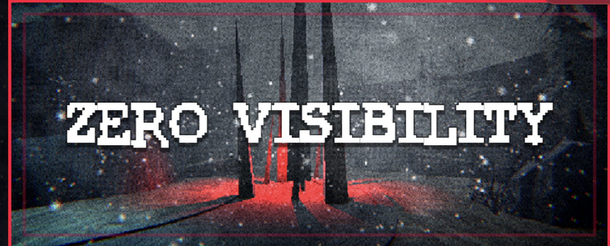
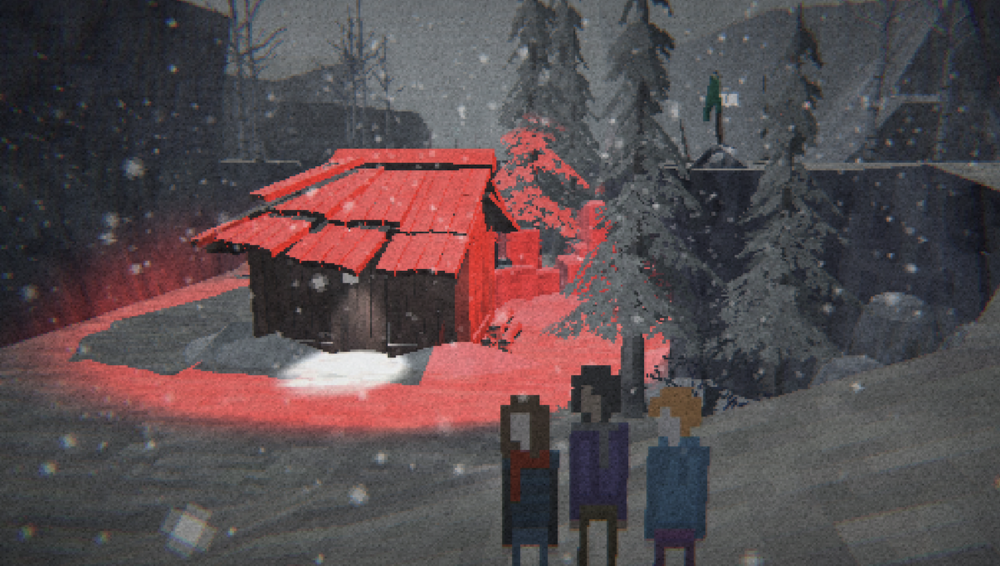
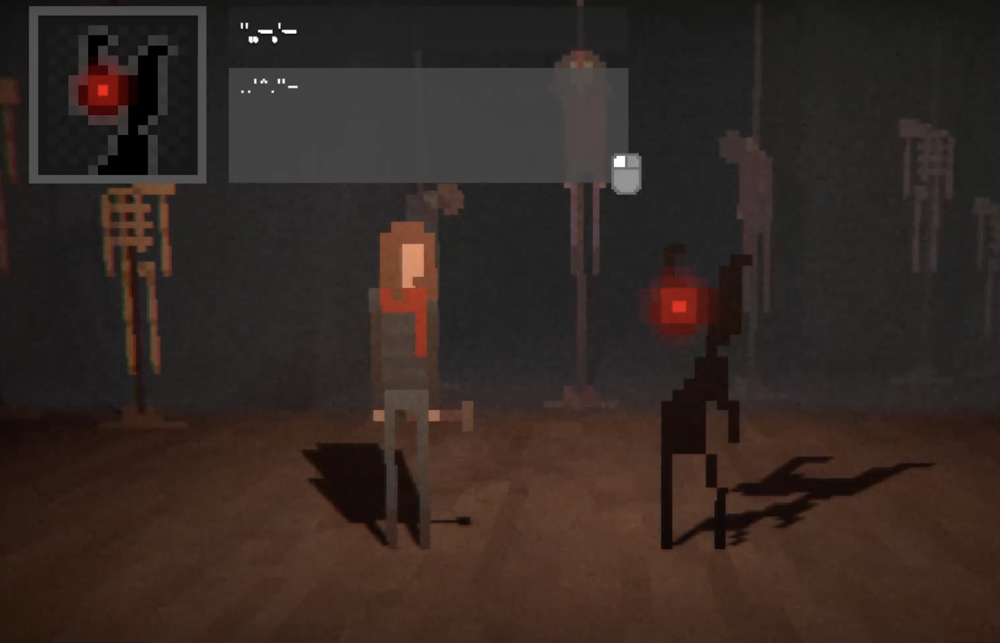
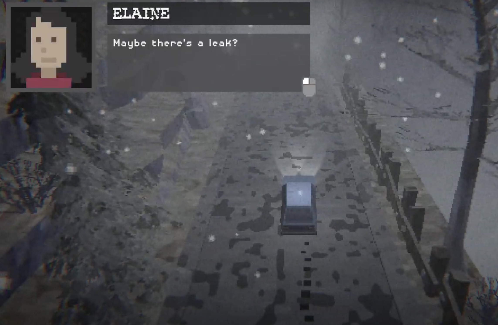

Zero Visibility is classified as a horror game. Four friends are driving in the mountains and suddenly can't see anything with all the snow and then their car breaks down. The characters are then sent to the mountains, they have to start walking around the mountain and then you are led with mysterious notes you have to read and the characters realize there is something else lurking in the mountains with them.

The three characters. I have mixed feelings about the pixel graphics; while I believe the characters get very close to blending in and may only require a little animation, I had trouble finding the monsters to be frightening, and it relies a little too heavily on stick figures.
Game Controls
The cotrols used to play the game
The game is not really confusing. The controls are pretty straight forward. You are able to use the arrows on your keyboard to control the car and walk the characters throughout the mountain. You are able to operate the vehicle they are driving and then are able to walk around the mountains with the arrow keys. But sometimes the keys can be laggy.
You are able to play one character but it basically controls all four of them. Though I feel like the characters held it back a little because I didn't really have time to bond with them and care about their well-being. It would have been beneficial to demonstrate that we cannot simply turn around in the first half or so. It's also a little bit overwritten; several scenes, like the bridge Boyd is on near the end, would be better off if the game simply let the setting to speak for itself without the characters interjecting.
Setting

The settings and plot in this game seem to be very simple and not complex. The setting is basically taken in the mountain the whole time. Once again, you are able to play one character but it basically controls all four of them. Though I feel like the characters held it back a little because I didn't really have time to bond with them and care about their well-being. It would have been beneficial to demonstrate that we cannot simply turn around in the first half or so. It's also a little bit overwritten; several scenes, like the bridge Boyd is on near the end, would be better off if the game simply let the setting to speak for itself without the characters interjecting. There are simple “tasks” I guess you could say in the game where the characters are able to look around for these notes or messages.

In Zero Visibility, you are able to get stuck sometimes in this game with the controls. You are able to control the car in the beginning of the game and occasionally you are able to get the car stuck, which then can lead you to be stuck for a moment or two until you are able to get out of the situation. You make progress in the game by controlling your characters to walk through the snowy mountains and find these notes which leads you more into finding out what can be in the mountains with your characters.
The end of the game where the one character Sara defeats the monster that took her friends in the mountain
I see this game can be realistic and can happen to people and probably has. Lots of people go on adventures throughout the woods or mountains and will tend to get lost or maybe realize they aren't the only ones there and someone else or something can be surrounding them or watching them.
I think the animation could use a little more development considering the game is based off of stick figures and the quality is more on the pixelated side. I would definitely play this game again with some little issues being fixed. The game was enjoyable and with minor fixes I think the game could be a lot scarier with it not being so pixelated.